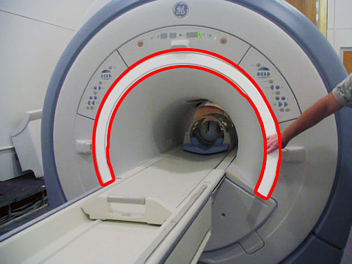
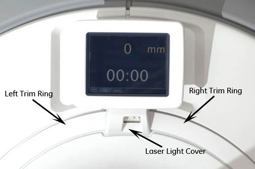

Illustration 2: Remove Trim Ring

On the In-Room Display version, remove the laser light cover, which is held on with two (2) screws and a popper. The In-Room Display has two (2) front trim rings (see Illustration 3).
Illustration 3: In-Room Display Laser Light Cover
